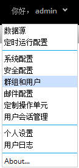
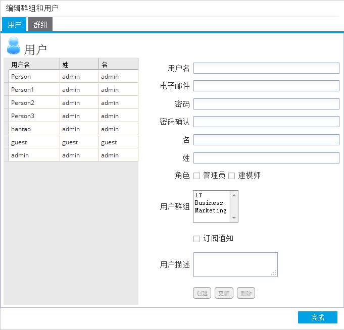
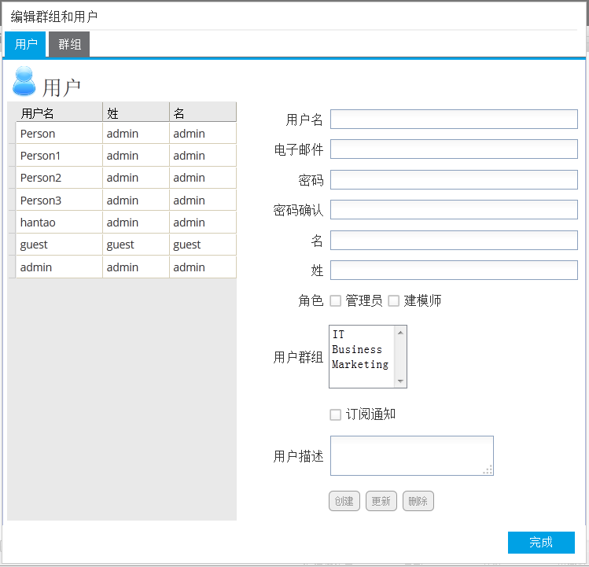

点击用户名后的下拉菜单，选择群组和用户选项。打开群组和用户管理窗口。

在群组和用户管理窗口中点击群组标签，切换至群组维护界面。

编辑群组名和描述信息后，点击创建按钮进行新增群组操作。
在界面顶部已存在群组列表中选择待编辑的群组信息。下方的编辑控件中会显示当前选中的群组信息。点击更新按钮尽心更新，或者点击删除按钮删除本条群组信息。如果待删除的群组中包含用户，则必须先删除该群组下的所有用户后才可以删除该群组信息。
在群组和用户管理窗口中点击用户标签，切换至用户维护界面。

左侧表格内为系统中已存在的用户信息。右侧为用户信息编辑器。
创建用户：在右侧编辑器中录入用户相关信息后点击创建按钮新建用户信息。 修改/删除用户：在左侧表格中选择待修改的用户后，该用户信息会显示在右侧编辑器中。
点击更新按钮对已修改的内容进行保存。或点击删除按钮删除本条信息。
用户角色是访问控制机制。用户可以是管理员和建模师两种角色中的一种、两种或者不是这两种角色。 管理员有系统管理工能的权限，建模师可以创建新的工作流（workflow）。 分析师 既不是管理员也不是建模师，可以查看和执行工作流。管理员和建模师都可以执行分析师的操作。